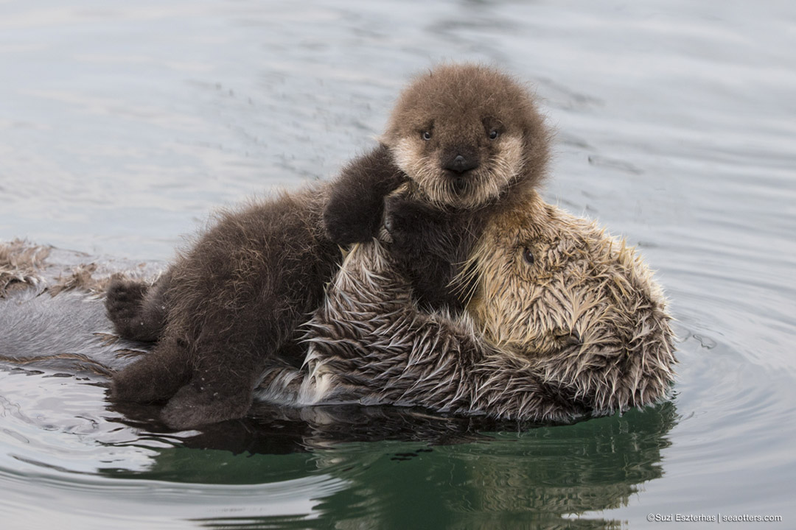
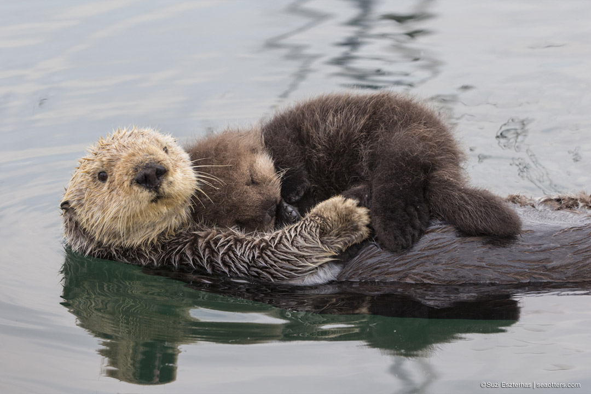
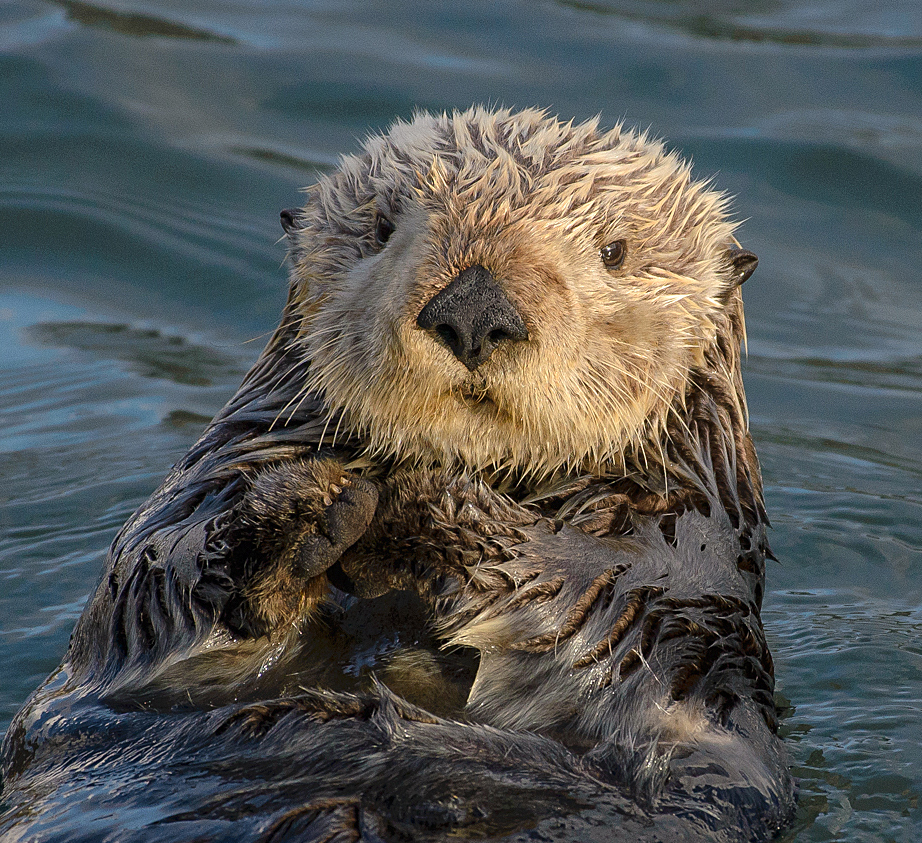
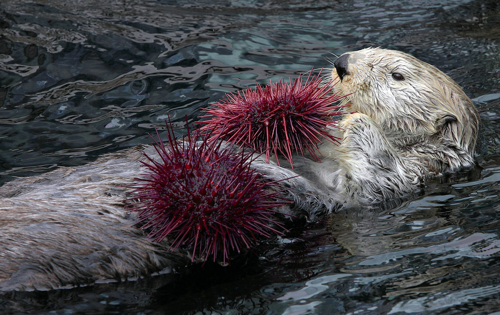
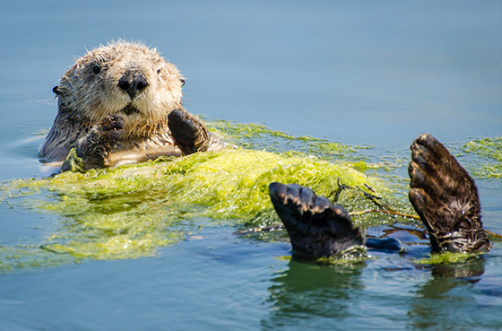
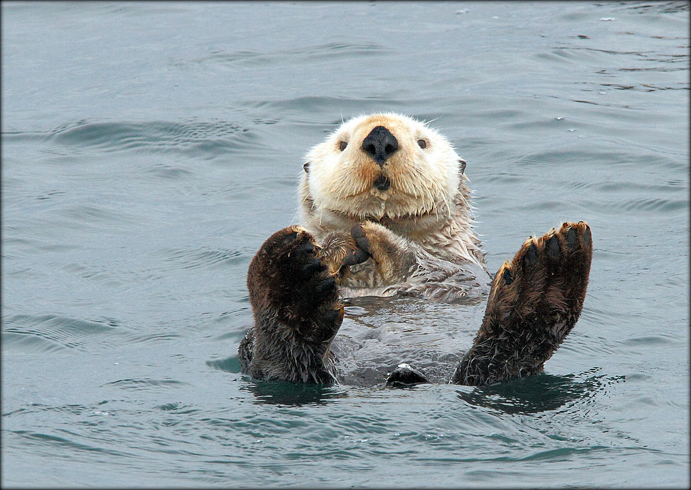
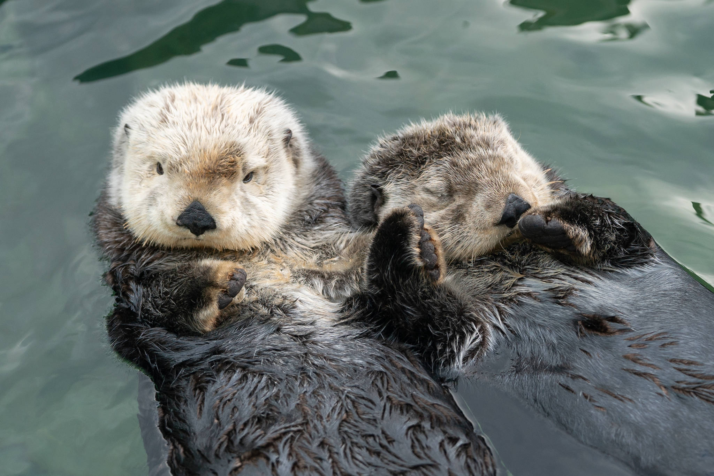
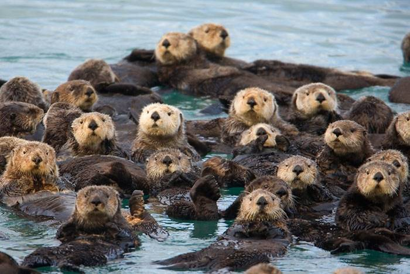
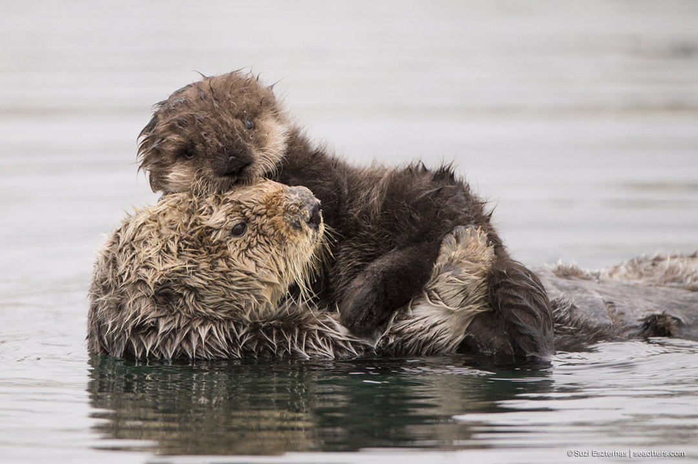

1. Most sea otters call Alaska home. About 90% of the world’s sea otters live in coastal Alaska.
2. Sea otters eat 25% of their body weight in food every day.Their diet includes sea urchins, crabs, mussels, and clams!
3. Sea otters cleverly use rocks as ‘tools’ to smash the shells by placing the rock upon their chest while floating on their backs and bashing the mollusc against it repeatedly.
4. Sea otters were hunted almost to extinction for their fur and only 1 – 2,000 animals remained in the early 20th century. Today, the population stands at 100 – 150,000 animals, but the IUCN Red List still categorizes sea otters as endangered.

5. Sea otters wash themselves after a meal, cleaning their coat with their teeth and paws.
6. A sea otter has more hairs on a fingernail-sized patch of its skin than a person has on their whole head.

7. Sea otters have the thickest fur of any animal. Their fur contains between 600,000 to 1,000,000 hair follicles per square inch. Unlike most other marine mammals, otters lack a blubber layer.

8. Sea otters are a ‘keystone species’ within kelp forests, maintaining the balance in the food web between kelp and sea urchins, allowing the forests to thrive.

9. In maintaining kelp forests, sea otters also help to reduce levels of atmospheric carbon dioxide (CO2).

10. Sea otters are vulnerable to oil spills which can drastically impact the insulating power of their fur, and destruction of kelp forests which are key foraging grounds.

11. They are preyed upon in the wild by sharks, bears, eagles and killer whales.
12. Sea otters wrap themselves in kelp or hold hands when sleeping to prevent drifting.

13. A group of resting otters is called a raft. Otters love to rest in groups. Researchers have seen concentrations of over 1,000 otters floating together.

14. Sea otters are members of the weasel family (Mustelidae).

15. The scientific name of the Sea Otter is Enhydra lutris, which simply means ‘in water otter’ in Greek and Latin.
16. Sea otters learn to swim at 4 weeks of age.
17. The nostrils and ears of sea otters close in the water.
18. Sea otters are unique in the otter family as the only species to give birth in the water.
19. Sea otters can live up to 23 years in the wild.

20. The coat of the sea otter has ‘pockets’ under the front legs which are used to stash food during dives, much like the ‘pouches’ in the cheeks of hamsters during foraging.